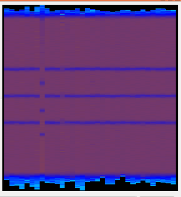
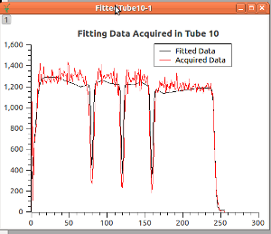
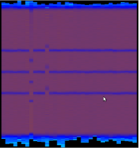
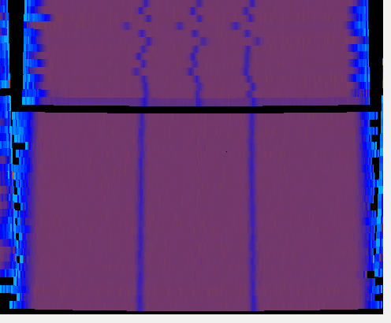
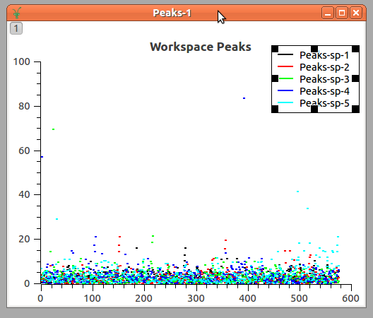
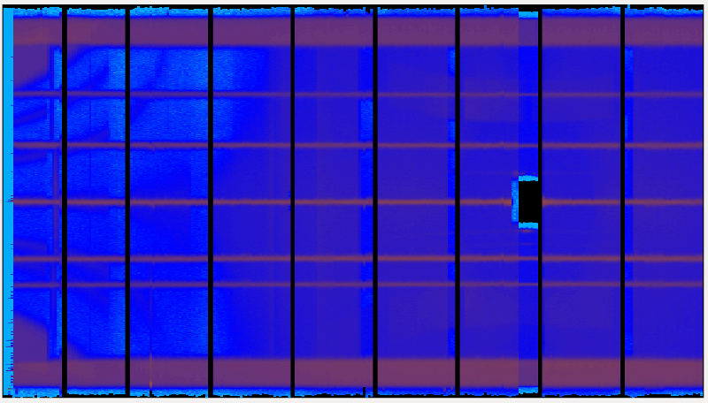
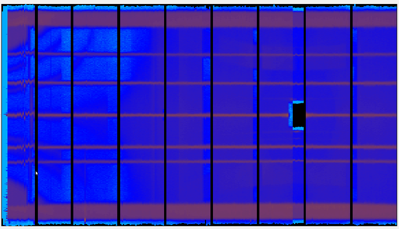

Calibration#
Calibration is currently based on tubes and is accessed using the tube module.
Definition of Calibration#
- tube.calibrate(ws, tubeSet, knownPositions, funcForm[, fitPar, margin, rangeList, calibTable, plotTube, excludeShorTubes, overridePeaks, fitPolyn, outputPeak])#
Define the calibrated positions of the detectors inside the tubes defined in tubeSet.
Tubes may be considered a list of detectors aligned that may be considered as pixels for the analogy when they values are displayed.
The position of these pixels are provided by the manufacturer, but its real position depends on the electronics inside the tube and varies slightly from tube to tube. The calibrate method, aims to find the real positions of the detectors (pixels) inside the tube.
For this, it will receive an Integrated workspace, where a special measurement was performed so to have a pattern of peaks or through. Where gaussian peaks or edges can be found.
The calibration follows the following steps
Finding the peaks on each tube
Fitting the peaks against the Known Positions
Defining the new position for the pixels(detectors)
Let’s consider the simplest way of calling calibrate:
from tube import calibrate ws = Load('WISH17701') ws = Integration(ws) known_pos = [-0.41,-0.31,-0.21,-0.11,-0.02, 0.09, 0.18, 0.28, 0.39 ] peaks_form = 9*[1] # all the peaks are gaussian peaks calibTable = calibrate(ws,'WISH/panel03',known_pos, peaks_form)
In this example, the calibrate framework will consider all the tubes (152) from WISH/panel03. You may decide to look for a subset of the tubes, by passing the rangeList option.
# This code will calibrate only the tube indexed as number 3 # (usually tube0004) calibTable = calibrate(ws,'WISH/panel03',known_pos, peaks_form, rangeList=[3])
Finding the peaks on each tube
Dynamically fitting peaks
The framework expects that for each tube, it will find a peak pattern around the pixels corresponding to the known_pos positions.
The way it will work out the estimated peak position (in pixel) is:
Get the length of the tube: distance(first_detector,last_detector) in the tube.
Get the number of detectors in the tube (nDets)
It will be assumed that the center of the tube correspond to the origin (0)
centre_pixel = known_pos * nDets/tube_length + nDets/2
It will them look for the real peak around the estimated value as:
# consider tube_values the array of counts, and peak the estimated # position for the peak real_peak_pos = argmax(tube_values[peak-margin:peak+margin])
After finding the real_peak_pos, it will try to fit the region around the peak to find the best expected position of the peak in a continuous space. It will do this by fitting the region around the peak to a Gaussian Function, and them extract the PeakCentre returned by the Fitting.
centre = real_peak_pos fit_start, fit_stop = centre-margin, centre+margin values = tube_values[fit_start,fit_stop] background = min(values) peak = max(values) - background width = len(where(values > peak/2+background)) # It will fit to something like: # Fit(function=LinerBackground,A0=background;Gaussian, # Height=peak, PeakCentre=centre, Sigma=width,fit_start,fit_end)
Force Fitting Parameters
These dynamically values can be avoided by defining the fitPar for the calibrate function
eP = [57.5, 107.0, 156.5, 206.0, 255.5, 305.0, 354.5, 404.0, 453.5] # Expected Height of Gaussian Peaks (initial value of fit parameter) ExpectedHeight = 1000.0 # Expected width of Gaussian peaks in pixels # (initial value of fit parameter) ExpectedWidth = 10.0 fitPar = TubeCalibFitParams( eP, ExpectedHeight, ExpectedWidth ) calibTable = calibrate(ws, 'WISH/panel03', known_pos, peaks_form, fitPar=fitPar)
Different Function Factors
Although the examples consider only Gaussian peaks, it is possible to change the function factors to edges by passing the index of the known_position through the funcForm. Hence, considering three special points, where there are one gaussian peak and two edges, the calibrate could be configured as
known_pos = [-0.1 2 2.3] # gaussian peak followed by two edges (through) form_factor = [1 2 2] calibTable = calibrate(ws,'WISH/panel03',known_pos, form_factor)
Override Peaks
It is possible to scape the finding peaks position steps by providing the peaks through the overridePeaks parameters. The example below tests the calibration of a single tube (30) but skips the finding peaks step.
known_pos = [-0.41,-0.31,-0.21,-0.11,-0.02, 0.09, 0.18, 0.28, 0.39 ] define_peaks = [57.5, 107.0, 156.5, 206.0, 255.5, 305.0, 354.5, 404.0, 453.5] calibTable = calibrate(ws, 'WISH/panel03', known_pos, peaks_form, overridePeaks={30:define_peaks}, rangeList=[30])
Output Peaks Positions
Enabling the option outputPeak a WorkspaceTable will be produced with the first column as tube name and the following columns with the position where corresponding peaks were found. Like the table below.
TubeId
Peak1
…
PeakM
tube0
15.5
…
370.3
…
…
…
…
tubeN
14.9
…
371.2
The signature changes to:
.. code-block:: python
calibTable, peakTable = calibrate(…)
It is possible to give a peakTable directly to the outputPeak option, which will make the calibration to append the peaks to the given table.
Hint
It is possible to save the peakTable to a file using the
savePeak()method.Find the correct position along the tube
The second step of the calibration is to define the correct position of pixels along the tube. This is done by fitting the peaks positions found at the previous step against the known_positions provided.
known | * positions | * | * | * |________________ pixels positions
The default operation is to fit the pixels positions against the known positions with a quadratic function in order to define an operation to move all the pixels to their real positions. If necessary, the user may select to fit using a polinomial of 3rd order, through the parameter fitPolyn.
Note
The known positions are given in the same unit as the spacial position (3D) and having the center of the tube as the origin.
Hence, this section will define a function that:
\[F(pix) = RealRelativePosition\]The fitting framework of Mantid stores values and errors for the optimized coefficients of the polynomial in a table (of type TableWorkspace). These tables can be grouped into a WorkspaceGroup by passing the name of this workspace to option parameters_table_group. The name of each table workspace will the string parameters_table_group plus a suffix which is the index of the tube in the input tubeSet.
Define the new position for the detectors
Finally, the position of the detectors are defined as a vector operation like
\[\vec{p} = \vec{c} + v \vec{u}\]Where \(\vec{p}\) is the position in the 3D space, v is the RealRelativePosition deduced from the last session, and finally, \(\vec{u}\) is the unitary vector in the direction of the tube.
- Parameters:
ws – Integrated workspace with tubes to be calibrated.
tubeSet – Specification of Set of tubes to be calibrated. If a string is passed, a TubeSpec will be created passing the string as the setTubeSpecByString.
This will be the case for TubeSpec as string
self.tube_spec = TubeSpec(ws) self.tube_spec.setTubeSpecByString(tubeSet)
If a list of strings is passed, the TubeSpec will be created with this list:
self.tube_spec = TubeSpec(ws) self.tube_spec.setTubeSpecByStringArray(tubeSet)
If a
TubeSpecobject is passed, it will be used as it is.- Parameters:
knownPositions – The defined position for the peaks/edges, taking the center as the origin and having the same units as the tube length in the 3D space.
funcForm – list with special values to define the format of the peaks/edge (peaks=1, edge=2). If it is not provided, it will be assumed that all the knownPositions are peaks.
Optionals parameters to tune the calibration:
- Parameters:
fitPar – Define the parameters to be used in the fit as a
TubeCalibFitParams. If not provided, the dynamic mode is used. SeeprovideTheExpectedValue()margin – value in pixesl that will be used around the peaks/edges to fit them. Default = 15. See the code of
TubeCalibDemoMerlinwhere margin is used to calibrate small tubes.
fit_start, fit_end = centre - margin, centre + margin
- Parameters:
rangeList – list of tubes indexes that will be calibrated. As in the following code (see:
improvingCalibrationSingleTube()):
for index in rangelist: do_calibrate(tubeSet.getTube(index))
- Parameters:
calibTable – Pass the calibration table, it will them append the values to the provided one and return it. (see:
TubeCalibDemoMerlin)plotTube – If given, the tube whose index is in plotTube will be ploted as well as its fitted peaks, it can receive a list of indexes to plot.(see:
changeMarginAndExpectedValue())excludeShortTubes – Do not calibrate tubes whose length is smaller than given value. (see at Examples/TubeCalibDemoMerlin_Adjustable.py)
overridePeaks – dictionary that defines an array of peaks positions (in pixels) to be used for the specific tube(key). (see:
improvingCalibrationSingleTube())
for index in rangelist: if overridePeaks.has_key(index): use_this_peaks = overridePeaks[index] # skip finding peaks fit_peaks_to_position()
- Parameters:
fitPolyn – Define the order of the polynomial to fit the pixels positions against the known positions. The acceptable values are 1, 2 or 3. Default = 2.
outputPeak – Enable the calibrate to output the peak table, relating the tubes with the pixels positions. It may be passed as a boolean value (outputPeak=True) or as a peakTable value. The later case is to inform calibrate to append the new values to the given peakTable. This is useful when you have to operate in subsets of tubes. (see
TubeCalibDemoMerlinthat shows a nice inspection on this table).
calibTable, peakTable = calibrate(ws, (omitted), rangeList=[1], outputPeak=True) # appending the result to peakTable calibTable, peakTable = calibrate(ws, (omitted), rangeList=[2], outputPeak=peakTable) # now, peakTable has information for tube[1] and tube[2]
Use Cases#
Among the examples, inside the Examples folder, the user is encouraged to look at
TubeCalibDemoMaps_All, there he will find 7 examples showing how to use calibrate method.
minimalInput()shows the easiest way to use calibrate.provideTheExpectedValue()shows the usage of fitPar parameter to provide the expected values for the peaks in pixels.changeMarginAndExpectedValue()demonstrate how to use margin, fitPar, plotTube, and outputPeakimprovingCalibrationSingleTube()explores the usage of rangeList and overridePeaks to improve the calibration of specific tubes.improvingCalibrationOfListOfTubes()extends theimprovingCalibrationSingleTube to provide a good calibration to almost all instrument.calibrateB2Window()explore a singularity of the MAP14919 example, where the second peak does not appear clear on some tubes inside one door. So, this example, shows how to use rangeList to carry a calibration to the group of tubes.completeCalibration()demonstrate how the rangeList, overridePeaks, may be used together to allow the calibration of the whole instrument, despite, its particularities in some cases.findThoseTubesThatNeedSpecialCareForCalibration()show an approach to find the tubes that will require special care on calibrating. It will also help to find detectors that are not working well.
Examples#
MAPS instrument#
Tube Calibration Demonstration for MAPS instrument.
This module group many examples and also demonstrate how to work with
the tube.calibrate().
It starts from the simplest way to perform a calibration. It them increase the complexity of dealing with real calibration work, when particularities of the instrument must be considered
At the end, it gives a suggestion on a techinique to investigate and improve the calibration itself.
Minimal Input#
- Examples.TubeCalibDemoMaps_All.minimalInput(filename)#
Simplest way of calling
tube.calibrate()The minimal input for the calibration is the integrated workspace and the known positions.
Even though it is easy to call, the calibration performs well, but there are ways to improve the results, as it is explored after.

Provide Expected Value#
- Examples.TubeCalibDemoMaps_All.provideTheExpectedValue(filename)#
Giving the expected value for the position of the peaks in pixel.
The
minimalInput()let to the calibrate to guess the position of the pixels among the tubes. Although it works nicelly, providing these expected values may improve the results. This is done through the fitPar parameter.
Change Margin and Expected Value#
- Examples.TubeCalibDemoMaps_All.changeMarginAndExpectedValue(filename)#
To fit correctly, it is important to have a good window around the peak. This windown is defined by the margin parameter.
This examples shows how the results worsen if we change the margin from its default value 15 to 10.
It shows how to see the fitted values using the plotTube parameter.
It will also output the peaks position and save them, through the outputPeak option and the
tube.savePeak()method.An example of the fitted data compared to the acquired data to find the peaks positions:

The result deteriorate, as you can see:

Improving Calibration Single Tube#
- Examples.TubeCalibDemoMaps_All.improvingCalibrationSingleTube(filename)#
The
provideTheExpectedValue()provided a good solution, but there are few tubes whose calibration was not so good.This method explores how to deal with these tubes.
First of all, it is important to identify the tubes that did not work well.
From the outputs of provideTheExpectedValue, looking inside the instrument tree, it is possible to list all the tubes that are not so good.
Unfortunately, they do not have a single name identifier. So, locating them it is a little bit trickier. The
findThoseTubesThatNeedSpecialCareForCalibration()shows one way of finding those tubes. The index is the position inside the PeakTable.For this example, we have used inspection from the Instrument View. One of them is inside the A1_Window, 3rd PSD_TUBE_STRIP 8 pack up, 4th PSD_TUBE_STRIP: Index = 8+8+4 - 1 = 19.
In this example, we will ask the calibration to run the calibration only for 3 tubes (indexes 18,19,20). Them, we will check why the 19 is not working well. Finally, we will try to provide another peaks position for this tube, and run the calibration again for these tubes, to improve the results.
This example shows how to use overridePeaks option
Improving Calibration of List of Tubes#
- Examples.TubeCalibDemoMaps_All.improvingCalibrationOfListOfTubes(filename)#
Analysing the result of provideTheExpectedValue it was seen that the calibration of some tubes was not good.
Note
This method list some of them, there are a group belonging to window B2 that shows only 2 peaks that are not dealt with here.
If first plot the bad ones using the plotTube option. It them, find where they fail, and how to correct their peaks, using the overridePeaks. If finally, applies the calibration again with the points corrected.
Calibrating Window B2#
- Examples.TubeCalibDemoMaps_All.calibrateB2Window(filename)#
There are among the B2 window tubes, some tubes that are showing only 2 strips.
Those tubes must be calibrated separated, as the known positions are not valid.
This example calibrate them, using only 4 known values: 2 edges and 2 peaks.
Run this example, and them see the worksapce in the calibrated instrument and you will see how it worked.
The picture shows the output, look that only a section of the B2 Window was calibrated.

Complete Calibration#
- Examples.TubeCalibDemoMaps_All.completeCalibration(filename)#
This example shows how to use some properties of calibrate method to join together the calibration done in
provideTheExpectedValue(), and improved incalibrateB2Window(), andimprovingCalibrationOfListOfTubes().It also improves the result of the calibration because it deals with the E door. The acquired data cannot be used to calibrate the E door, and trying to do so, produces a bad result. In this example, the tubes inside the E door are excluded to the calibration. Using the ‘’’rangeList’’’ option.
Calibration technique: Finding tubes not well calibrated#
- Examples.TubeCalibDemoMaps_All.findThoseTubesThatNeedSpecialCareForCalibration(filename)#
The example
provideTheExpectedValue()has shown its capability to calibrate almost all tubes, but, as explored in theimprovingCalibrationOfListOfTubes()andimprovingCalibrationSingleTube()there are some tubes that could not be calibrated using that method.The goal of this method is to show one way to find the tubes that will require special care.
It will first perform the same calibration seen in
provideTheExpectedValue(), them, it will process the peakTable output of the calibrate method when enabling the parameter outputPeak.It them creates the Peaks workspace, that is the difference of the peaks position from the expected values of the peaks positions for all the tubes. This allows to spot what are the tubes whose fitting are outliers in relation to the others.

The final result for this method is to output using plotTube the result of the fitting to all the ‘outliers’ tubes.
MERLIN instrument#
Tube Calibration Demonstration program for MERLIN.
Attention
MERLIN instruments are loaded with already calibrated values. The calibration works nicelly with these files, but if you want to see the uncalibrated file you can do it. Look at How to reset detectors calibration.
In this example, the calibration of the whole MERLIN instrument is shown. It demonstrate how to
use tube.calibrate() to calibrate MERLIN tubes.
Opening the calibrated data in the Instrument View, it is possible to group the tubes in some common regions:
Doors 9 and 8 are similar and can be calibrated together using 7 key points
Doors 7,6,5,4, 2 and 1 can be calibrated using 9 key points.
Door 3 is particular, because it is formed with some smaller tubes as well as some large tubes.
This example shows:
How to calibrate regions of the instrument separetelly.
How to use calibTable parameter to append information in order to create a calibration table for the whole instrument.
- How to use the outputPeak to check how the calibration is working as well as the usage of analisePeakTable method to
look into the details of the operation to improve the calibration.
It deals with defining different known positions for the different tube lengths.
The output of this examples shows an improvement in relation to the previous calibrated instrument.

The previous calibrated instrument view:

Other Useful Methods#
- tube.savePeak(peakTable, filePath)#
Allows to save the peakTable to a text file.
- Parameters:
peakTable – peak table as the workspace table provided by calibrated method, as in the example:
calibTable, peakTable = calibrate(..., outputPeak=peakTable) savePeak(peakTable, 'myfolder/myfile.txt')
- Parameters:
filePath – where to save the file. If the filePath is not given as an absolute path, it will be considered relative to the defaultsave.directory.
The file will be saved with the following format:
id_name (parsed space to %20) [peak1, peak2, …, peakN]
You may load these peaks using readPeakFile
panel1/tube001 [23.4, 212.5, 0.1] ... panel1/tubeN [56.3, 87.5, 0.1]
- tube.readPeakFile(file_name)#
Load the file calibration
It returns a list of tuples, where the first value is the detector identification and the second value is its calibration values.
Example of usage:
for (det_code, cal_values) in readPeakFile('pathname/TubeDemo'): print(det_code) print(cal_values)
- Parameters:
file_name – Path for the file
- Return type:
list of tuples(det_code, peaks_values)
- tube.saveCalibration(table_name, out_path)#
Save the calibration table to file
This creates a CSV file for the calibration TableWorkspace. The first column is the detector number and the second column is the detector position
Example of usage:
saveCalibration('CalibTable','/tmp/myCalibTable.txt')
- Parameters:
table_name – name of the TableWorkspace to save
out_path – location to save the file
- tube.readCalibrationFile(table_name, in_path)#
Read a calibration table from file
This loads a calibration TableWorkspace from a CSV file.
Example of usage:
saveCalibration('CalibTable','/tmp/myCalibTable.txt')
- Parameters:
table_name – name to call the TableWorkspace
in_path – the path to the calibration file
Implementation#
More details on the finer points of the calibration implementation can be found at Tube Calibration and in: Calibration Implementation Details
Category: Techniques